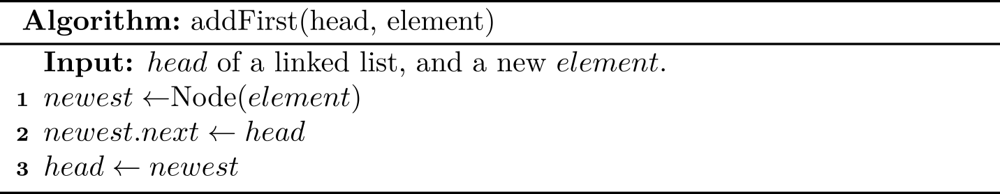

LinkedList
Different from an array based list, a linked list can be stored in non-contiguous memory, so this ADT performs well when we insert or remove an element at some position in a list because no any shifting is required. Of course, it has trade-offs. Since it is not contiguous, index-based retrieving is less efficient for a linked list ADT, because we have to scan the whole list at the worst case.
A typical illustration of a (singly) linked list is like:
Our implementation serves as a model for the code that we use for building more complex data structures throughout the book, so you should read this section carefully, even if you have experience working with linked lists.
As we can see, a linked list consists of a sequence of nodes, and the previous node has a link pointing to the next one. The following is working definition for linked lists:
A linked list is a recursive data structure that is either empty (
null) or a reference to a node having an item and a reference to a linked list.
By default, a linked list is a singly linked list, whose node has only one link to the next node. If every node also has a link to its previous node, it is called doubly linked list.
With object-oriented programming, implementing linked lists is not difficult. We start with a class that defines the node abstraction:
class Node {
Item item;
Node next;
}
class Node:
def __init__(self, item, next=None):
self.item = item
self.next = next
As for the linked list shown in the figure, we can use the following code:
first = Node(1)
second = Node(9)
third = Node(8)
first.next = second
second.next = third
From the definition, we can know that one is able to use the first node (first in our case) to represent a whole linked list, and the first node often is known as head. As for the procedure-oriented programming language (e.g., C), this is the only way to design a linked list.
In what follows, I will describe the common methods for a linked list ADT in a procedure-first way, and we are going to translate those pseudo code into Python or Java code in the following sections.
size(): the number of elements
The idea is straightforward: scanning the linked list from head, and stop util we reach a null.
In practice, this method is not necessary due to its inefficiency (\(O(N)\)), and we can store its size an attribute directly. Since adding a size is trivial, and for the ease of description, we will not show how to use and update size attribute in the pseudo code.
isEmpty(): return true if there is no any element
One solution is to check whether its size is 0. The following shows an equivalent approach with the constant time complexity:
addFirst(): add an element at the beginning
The main idea is that we create a new node with the new element, set its next link to refer to the current head, and set the list’s head to point to the new node.
This figure illustrates (a) before the insertion; (b) after a new node is created and linked to the existing head; (c) after reassignment of the head reference to the newest node.
Recall that adding an element to an array cost \(O(n)\) when resizing is required, but this algorithm always costs only \(O(1)\).
addLast(): add an element at the end
The last position is also known as tail. If the linked list also maintains the tail node, then the implementation is trivial: just update the tail reference itself to the newly created node. It runs in \(O(1)\).
But we have to consider another corner case: when the linked list is empty, both head and tail is null, so it is illegal to use tail.next = newest.
We need to care about whether a node is null when designing algorithms for the linked list ADT1.
Additionally, if we introduce a tail for a linked list, the algorithm for adding an element should be updated accordingly. Some people may think the following algorithm is more easy-to-understand:
def add_last(self, item):
newest = Node(item)
if self.is_empty():
self.head = newest
else:
self.tail.next = newest
self.tail = newest
Now let's consider the situation where the tail does not exist. In this case, we need to compute the tail manually first, and therefore it runs in \(O(N)\).
We can also observe another trade-off here: maintaining an extra pointer (i.e., tail) costs some overhead in space, but it gains much performance in time.
removeFirst(): remove an element at the beginning
If the linked list is empty, then an exception should be thrown. Otherwise, we update the head to the second node.

This can be done in \(O(1)\):

removeLast(): remove an element at the end
The basic idea seems simple: if the linked list is empty, then an exception should be thrown. Otherwise, we update the tail to the second node to last. The key point is how to find the second node to last.

As we can see, it is a little tricky to delete the last node of a singly linked list. Since we have to walk through the linked list, the time complexity is \(O(N)\). We will introduce a simpler and more efficient way based on doubly linked lists.
1 You may consider some corner cases: the list is null, the size is one.